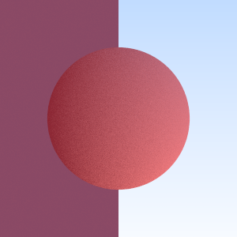
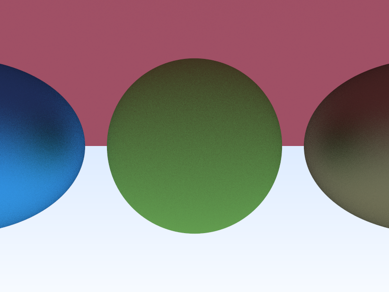
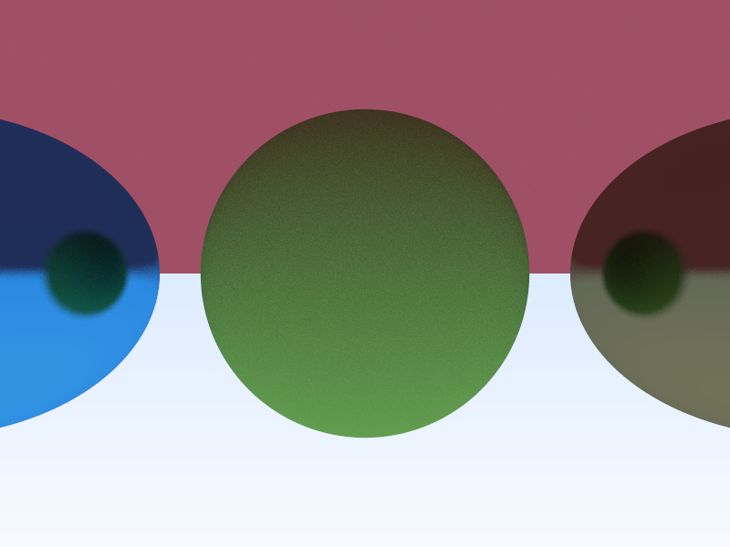

Project Overview
The Raytracer project is a physically-based rendering system that simulates the behavior of light to generate photorealistic images. It traces the path of light from the camera through each pixel of an image plane into a 3D scene, calculating interactions with various primitives.
Architecture
The project uses a modular architecture with core components and dynamic libraries:
- Core Components: Ray, Camera, Vector math
- Primitives: Objects that can be rendered (Spheres, Planes, etc.)
- Lights: Different light sources for scene illumination
- Renderers: Various rendering algorithms
- Effects: Optical effects like reflection, refraction
.
├── CMakeLists.txt
├── config.cfg
├── doc
│ ├── archi.png
│ ├── doc.css
│ ├── doc.html
│ ├── example1.png
│ ├── example2.png
│ └── example3.png
├── plugins
│ ├ Contains the shared libraries for different renderers and effects
└── src
├── Builder
│ ├── Builder.cpp
│ └── Builder.hpp
├── Camera.cpp
├── Camera.hpp
├── CoreRenderers
├── Graphical
├── Lights
├── main.cpp
├── Materials
│ ├── Flat.hpp
│ ├── IMaterials.hpp
│ └── Metal.hpp
├── OpticalEffects
├── Primitives
│ ├── Cube
│ │ ├── Cube.cpp
│ │ └── Cube.hpp
│ ├── IPrimitive.hpp
│ ├── Plane
│ │ ├── Plane.cpp
│ │ └── Plane.hpp
│ ├── PrimitiveList.hpp
│ ├── PrimitiveManager.cpp
│ ├── PrimitiveManager.hpp
│ ├── Sphere
│ │ ├── Sphere.cpp
│ │ └── Sphere.hpp
│ ├── Vector3D.cpp
│ └── Vector3D.hpp
├── Ray.cpp
├── Ray.hpp
├── SceneLoaders
└── tools
├── dlManager.cpp
├── dlManager.hpp
├── Error.cpp
└── Error.hpp
Building the Project
The project uses CMake for building. Follow these steps:
Prerequisites
- C++ compiler with C++17 support
- CMake 3.10 or higher
Build Commands
mkdir -p build
cd build
cmake ..
makeThis will generate the raytracer executable in the build directory.
Usage
Running the Raytracer
./raytracer [scene_file.cfg]Where scene_file.cfg contains the description of the scene to render.
Examples
  Core Classes
Camera
Defines the viewpoint and projection for rendering the scene.
Ray
Represents light rays that are traced through the scene.
Vector3D
Mathematical representations for positions and directions in 3D space.
Primitives
Objects that can be rendered (Spheres, Planes, etc.)
PrimitiveManager
Manages collections of primitives in the scene.
HitRecord
Records information about ray intersections with primitives.
Design Patterns
Builder
Used to construct all the project components. Primitives, lights, scene loader...
Factory Method
Used by PrimitiveManager to instantiate primitives based on a simple type name.
Shared Libraries
The raytracer uses shared libraries for:
- Modularity: Components can be developed and tested independently
- Dynamic Loading: Different renderers and effects can be loaded at runtime
- Extensibility: New primitives, lights, and effects can be added without recompiling the core
- Resource Efficiency: Only necessary components are loaded into memory
The dlManager utility provides infrastructure for loading and managing these libraries.
Tools & Utilities
Error
Sophisticated error handling system for debugging and error reporting.
dlManager
Dynamic library loading and management utility.